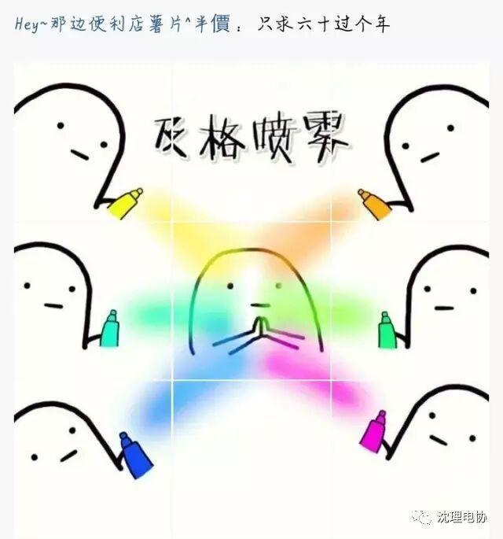
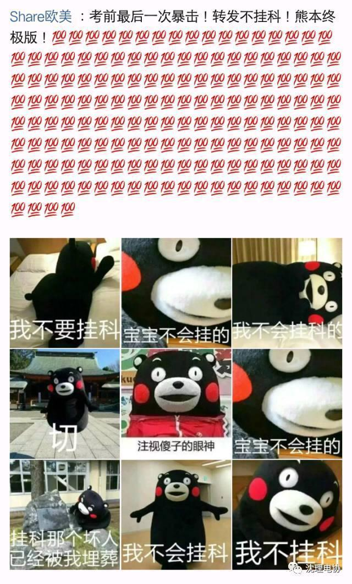
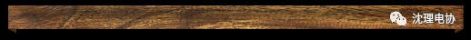

考试进行时，今天你复习了么？
◆ ◆ ◆ ◆
今天，你复习了么？
Today, did you review?
◆ ◆ ◆ ◆
转眼间，2016年已经过去，期末考试也如期到来了，想必大家最近都在图书馆里复习考试吧。
当然了，相比于复习，也有有很多同学选择了另一种方式来应付考试，于是乎……小编的朋友圈、QQ空间便被Ta们刷屏了。



好了，在最后，小编送一首现代诗送给正在奋战期末的你们！


假如考试临近你却仍在复习
不要悲伤，不要心急!
复习的日子里需要镇静：
相信吧，快乐的日子将会来临。
心儿永远向往着假期；
现在却常是忧郁。
一切都是瞬息，
一切都将会过去；
而那过去了的，
就会成为亲切的寒假！


沈理电协
sylgdzxh
长按识别左侧二维码，关注我们
编辑——王喆